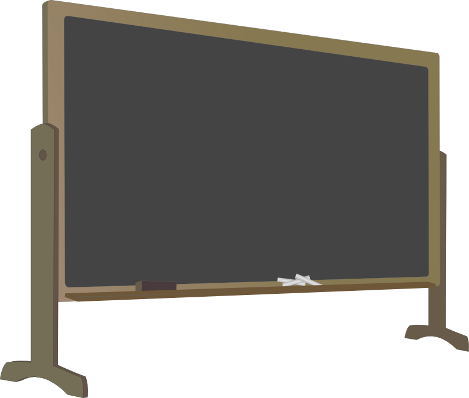

MAT100 for AM og PR
Uke 42, Del 2
16.10.2014
SPACE for å gå fremover, ESC for oversikt over slides
Relaterte rater / koblede hastigheter
Egentlig tema i forrige uke, men litt repetisjon virker nyttig
Eksempel: Et fly er 144 km øst for en flyplass og flyr vestover i 200 km/t. Samtidig befinner et annet fly seg i samme høyde, 60 km nord for flyplassen, og dette beveger seg nordover i 150 km/t. Hvor fort endrer avstanden mellom de to flyene seg?

Forstå problemet
- Les oppgaveteksten nøye. Tegn en figur.
- Gi navn til relevante størrelser
- Hva vet vi? Hva vil vi finne?
Finn sammenheng mellom kjente og søkte størrelser
- Finn en eller flere ligninger som relaterer det du ønsker å finne til det du vet
- Dette er ofte det vanskeligste steget. Kan f.eks. bli nødvendig å bruke geometriske argument som eliminerer noen av variablene.
Deriver og løs
- Deriver ligningene implisitt
- Sett inn størrelsene du har fått oppgitt, og løs for størrelsene du ønsker å finne
Vurder løsningen
- Formuler svaret med ord
- Er svaret rimelig? Kan du sjekke svaret, eller deler av svaret?
- Legg løsningsmetoden i verktøykassen. Kanskje får du bruk for den senere.
Eksempel 2: En vanntank har form av en opp-ned kjegle, med toppradius $10$m og dybde $8$m. Vann renner inn i tanken med $1/10 \operatorname{m}^3/\operatorname{min}$. Hvor fort endrer vannstanden seg når det er $4$m dypt?
Nå:
Tilbake til AREAL
"Hva er egentlig areal for noe?"
Riemann-summer og areal

Wikipedia/09glasgow09
.gif){kind=link}